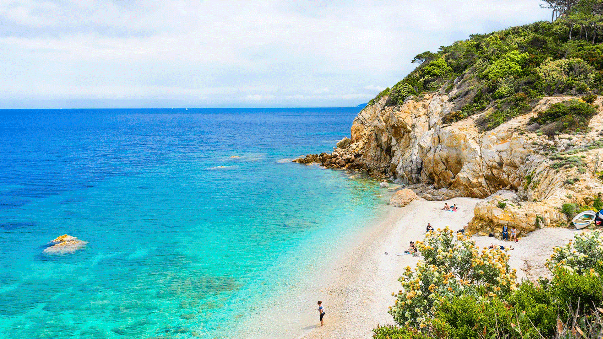
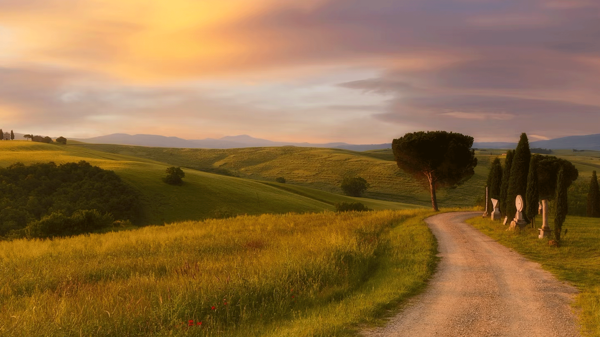

Explore the Enchantment of Tuscany
Tuscany boasts a wealth of treasures beyond the postcard-perfect scenes. From charming medieval villages to breathtaking coastlines and historic cities, there's something for every explorer here. Let's delve into some hidden gems waiting to be discovered:
Hilltop Towns

Tuscany is dotted with picturesque hilltop towns, each with its unique charm. Explore the winding alleys of Montepulciano, known for itsVino Nobile wine. Immerse yourself in the medieval atmosphere of San Gimignano with its iconic towers. Or wander the charming streets of Pienza, a Renaissance gem known for its cheese production.
The Tuscan Coast
Tuscany's coastline offers a captivating blend of sandy beaches, hidden coves, and dramatic cliffs. Relax on the golden sands of the Versilia Riviera or explore the charming fishing villages of the Cinque Terre. For a touch of history, visit the island of Elba, where Napoleon Bonaparte spent his exile.
Thermal Towns and Hot Springs
Tuscany is renowned for its natural hot springs, offering a chance to unwind and rejuvenate. Immerse yourself in the warm waters of Saturnia's cascading waterfalls or explore the luxurious spa towns of Montecatini Terme and Bagni Vignoni.
This is just a taste of the wonders that await you in Tuscany. Start planning your exploration today!